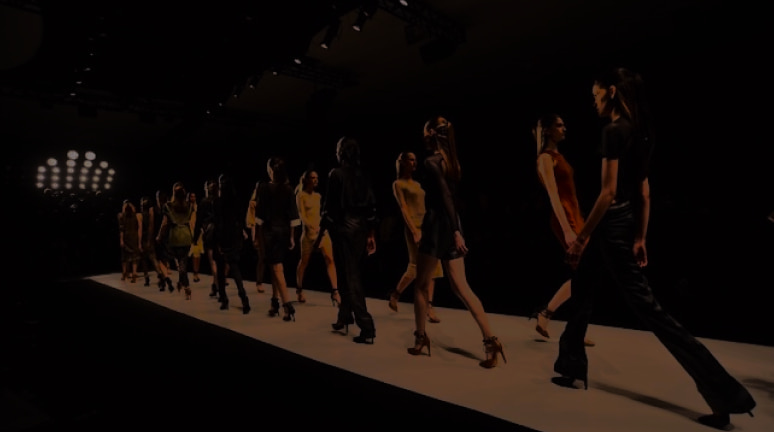
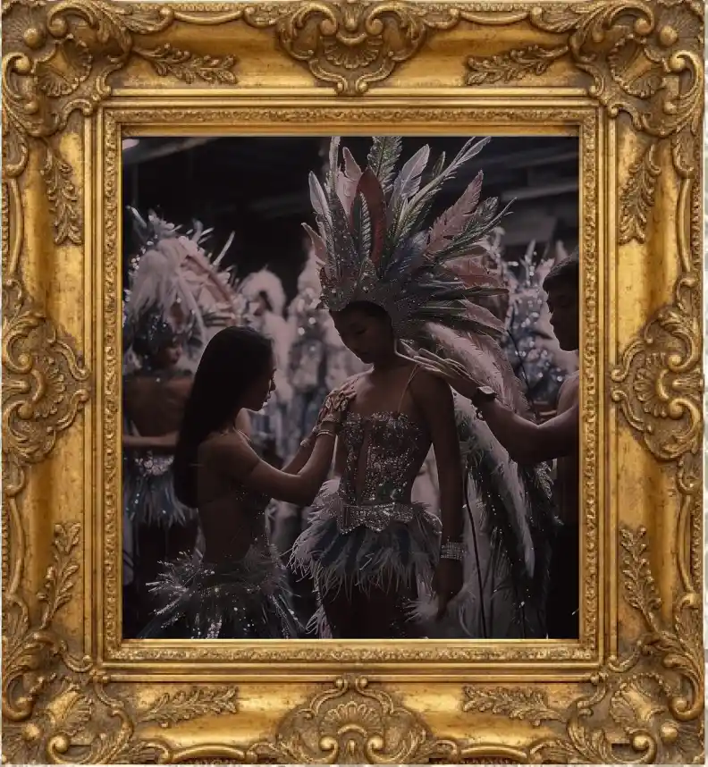
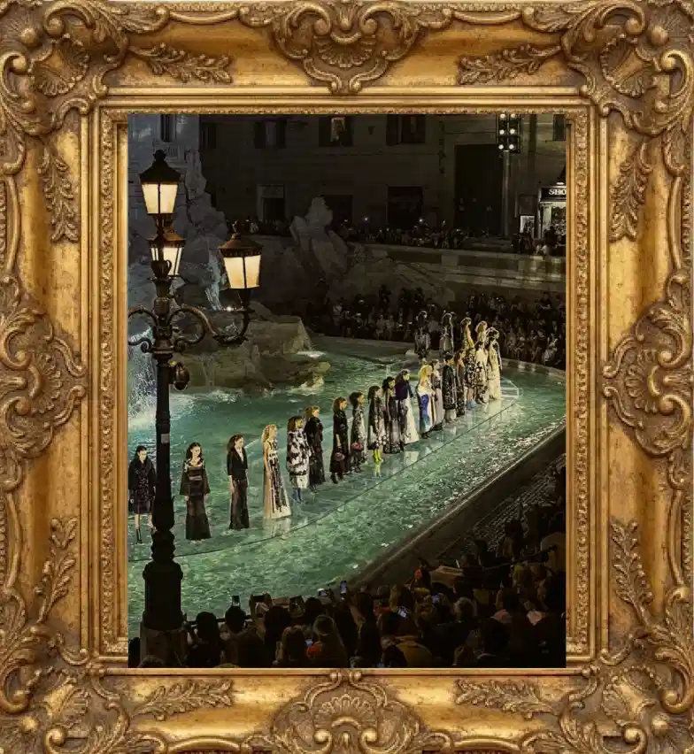

VOGUE ON THE MOVE

Karneval
Karneval har rødder flere hundrede år tilbage og er en festlig tradition, hvor mennesker samles om musik, dans, farverige kostumer og kreativ udfoldelse. Traditionen har udviklet sig gennem tiden og fejres i dag over hele verden som en hyldest til fællesskab, kultur og frihed til at udtrykke sig.

Modeshow
Til Vogue on the Move kan du opleve alt fra elegant haute couture og moderne streetwear til farverige avantgarde-looks og ekstravagante karnevalskostumer. Modeshowet hylder kreativitet, personlig stil og modet til at skille sig ud.
København
København danner den perfekte ramme om Vogue on the Move. Byen er kendt for sin unikke blanding af skandinavisk minimalisme, kreativitet og moderne streetstyle. Med sine farverige gader og levende kulturliv bliver København en naturlig scene for mode, kunst og fællesskab.